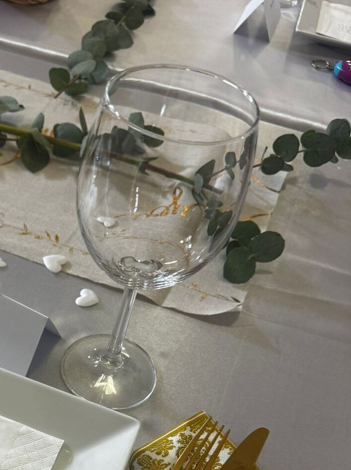
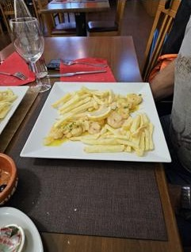
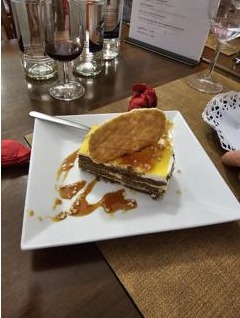
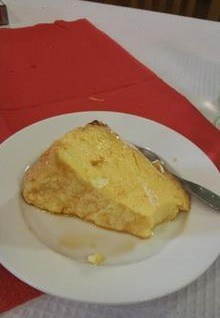
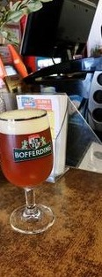

Café Benfica
Cuisine portugaise · Dudelange
Une salle rouge et blanc au nom d'un club de Lisbonne, un buffet de midi et une cuisine familiale — la maison portugaise du quartier des Terres Rouges.
Pourquoi « Benfica » à Dudelange ?
La maison porte le nom du club de Lisbonne — un repère pour la communauté portugaise des Terres Rouges, dans une ville qui compte parmi les plus fortes proportions d'habitants portugais du pays. Les matches passent sur écran, les murs de la salle portent des cadres rouges, et les tables se remplissent de supporters comme de voisins venus déjeuner.
Un « café » au sens portugais du mot : on y vient pour un express au comptoir comme pour un plat du jour, une bière locale ou un repas de famille.
Le buffet de midi.
Du lundi au samedi, un buffet à volonté — froid et chaud, dessert compris — pensé pour les employés du quartier. Chèque-repas et Ticket Restaurant acceptés.
- Buffet à volonté
- Chèque-repas
- 12h–14h

Matches, banquets et fêtes.
Carte à la carte le soir et le week-end, grande salle pour mariages et banquets, musique live et animations le week-end — la maison devient salle de fête sans changer d'adresse.
- Salle de banquet
- Mariages
- Musique live
Cuisine portugaise, portions généreuses.
Carte complète et tarifs disponibles sur place.

Pudim, bolo et une pression locale.



179 rue de la Libération, Dudelange.
Horaires relevés sur des annuaires publics, qui ne s'accordent pas tous sur l'heure de fermeture en soirée — à confirmer avec l'établissement.